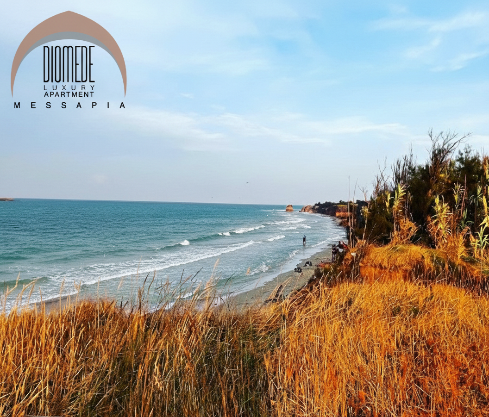

Il cuore pulsante della città è il suo porto naturale a forma di corna di cervo. Passeggiare su Via del Mare al tramonto, tra palme e yacht, è un'esperienza rigenerante. Non dimenticate di salire la scalinata monumentale per ammirare le Colonne Romane, simbolo della fine della Via Appia e punto panoramico mozzafiato.
Una tappa imperdibile famosa per il suo splendido centro storico a forma di cuore e per il suo castello.
Area marina protetta con spiagge selvagge e acque cristalline. Ideale per snorkeling e passeggiate tra dune e ulivi secolari.
Il capoluogo del Barocco pugliese. Ammirate la Basilica di Santa Croce e l'Anfiteatro Romano tra palazzi in pietra leccese.
La "Città Bianca", celebre per le sue case candide e la splendida Cattedrale. Perdetevi tra i vicoli panoramici del centro storico.
Uno dei borghi più belli d'Italia, celebre per i vicoli bianchi e le "fornelli pronti" (macellerie con cottura alla brace).
Sito UNESCO celebre nel mondo per i "Trulli", le iconiche costruzioni in pietra a secco con i tetti a cono.